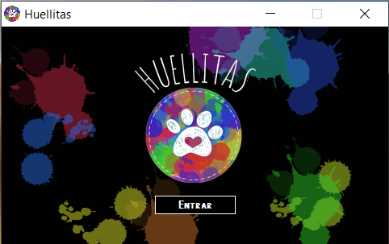
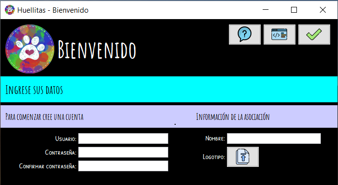
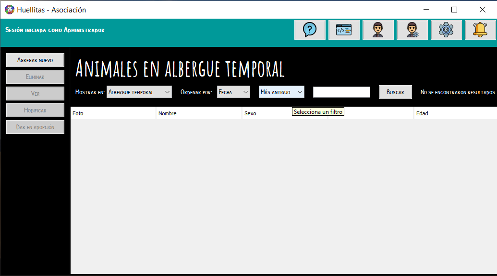
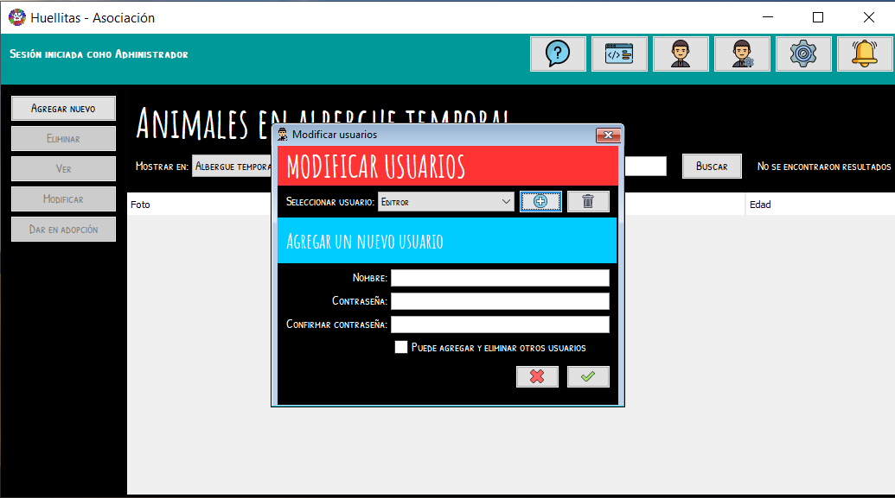
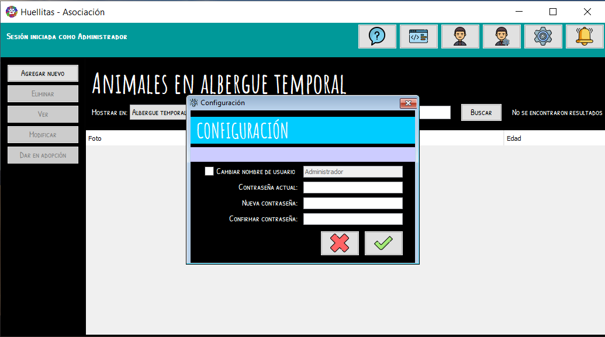
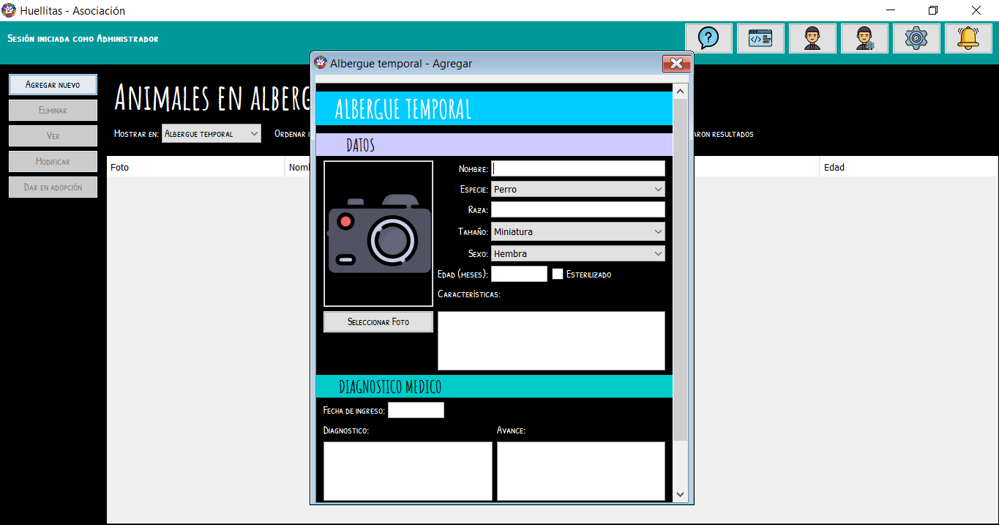
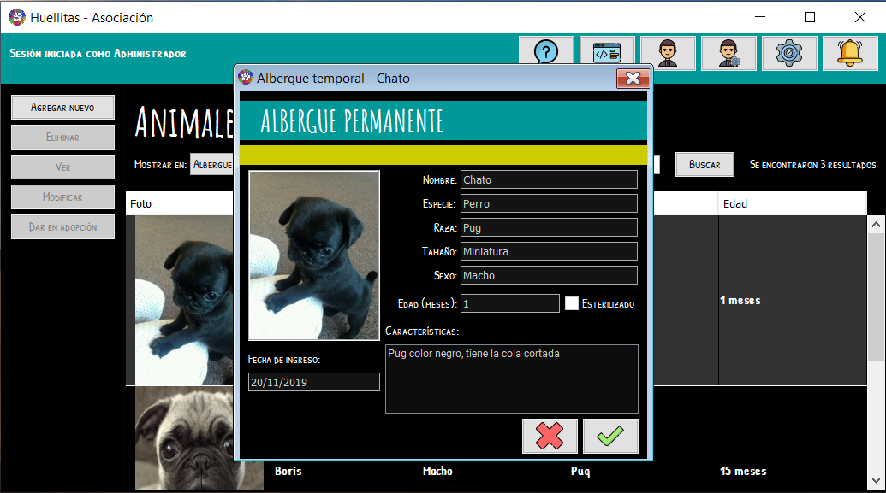
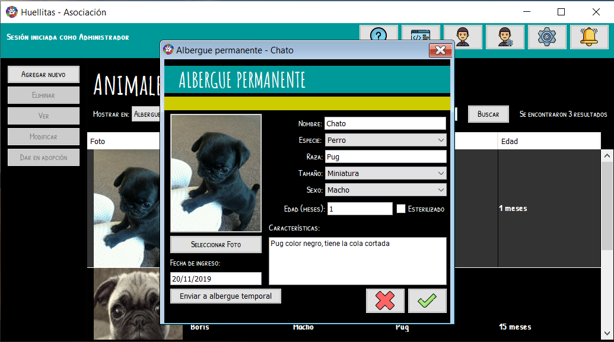
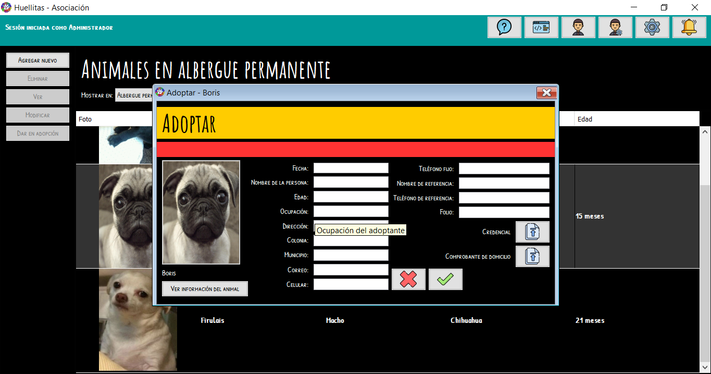
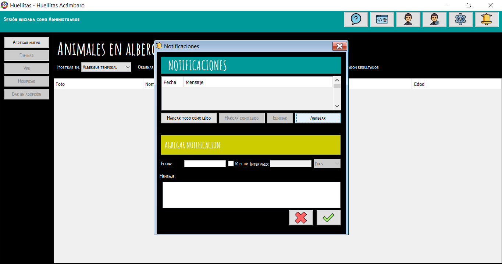

Para comenzar

Al iniciar aparecerá la pantalla de inicio. Para entrar pulse cualquier tecla o de click en el botón "Entrar"

Al iniciar la aplicación por primera vez aparecerá la pantalla de bienvenida, para comenzar debe crear una cuenta, elija un nombre de usuario y una contraseña, estos no deben ser mayores a 20 carácteres y no pueden contener símbolos ni letras ñ. Ingrese el nombre de su organización, no debe ser mayor a 50 carácteres. Después suba el logotipo de su organización, el tamaño máximo para cualquier imagen es de 1024 KB. Cuando todo este listo pulse en el botón con la palomita.
A continuación se abrira la pantalla principal

Puede usar los menus de la parte superior para filtrar los resultados de la tabla, de igual manera puede escribir en el campo de texto para buscar animales por nombre.
Diferencia entre un usuario con privilegios de administrador y uno normal
Usuario común
Un usuario común puede:
Ver, agregar, eliminar y modificar la información de cualquier animal en cualquier área.
Crear notificaciones, eliminarlas y marcarlas como leídas.
Cambiar su nombre de usuario y contraseña.
Administrador
Un administrador puede hacer lo mismo que un usuario común y además puede:
Agregar nuevos usuarios y eliminar los ya existentes.
Acceder a la línea de comandos
Agregar usuarios
Para agregar un nuevo usuario pulse en el botón con el icono , si el botón no aparece es debido a que no tiene privilegios de administrador, intente iniciando con una cuenta con permisos de administrador. Aparecerá el formulario Modificar usuarios.
Pulse en el botón con el icono  , se mostrará un formulario como el siguiente.
, se mostrará un formulario como el siguiente.

Ingrese un nombre de usuario, debe ser uno que no este en uso, no debe contener símbolos ni "ñ" y debe ser menor a 50 carácteres.
Ingrese una contraseña, no debe contener símbolos ni "ñ" y debe ser menor a 50 carácteres.
Vuelva a escribir su contraseña
Seleccione la casilla si quiere que el usuario tenga permisos de administrador y presione el botón con el icono 
Eliminar usuarios
Para eliminar un usuario pulse en el botón con el icono , si el botón no aparece es debido a que no tiene privilegios de administrador, intente iniciando con una cuenta con permisos de administrador. Aparecerá el formulario Modificar usuarios.
Desde el menú seleccione el usuario que desea eliminar y pulse en el botón con el icono , se mostrará un cuadro de diálogo para confirmar la accion, pulse "ok" y el usuario se eliminará.
Para cambiar su nombre de usuario o contraseña presione el icono , aparecerá el formulario Configuración.

Escriba su contraseña actual.
Ingrese una nueva contraseña, no debe contener símbolos ni "ñ" y debe ser menor a 50 carácteres.
Vuelva a escribir su nueva contraseña.
Si desea cambiar su nombre de usuario seleccione la casilla "cambiar nombre de usuario" e ingrese un nuevo nombre de usuario, debe ser uno que no este en uso, no debe contener símbolos ni "ñ" y debe ser menor a 50 carácteres.
Agregar animales a "Albergue temporal", "Albergue permanente", "Extraviados" y "Encontrados"
En el menú "Mostrar en" seleccione el área a donde quiere agregar el animal.
Pulse el botón "Agregar nuevo". El formulario que aparecerá varia dependiendo del área seleccionada pero todos funcionan igual, el siguiente ejemplo es el de Agregar al albergue temporal:

Llene todos los campos solicitados. El formato de la fecha es dd/mm/aaaa. Para subir una foto pulse el botón "Seleccionar foto", seleccione la foto que desea subir y pulse "Abrir"; el límite del tamaño de la foto es de 1024 KB.
Cuando todo este listo pulse el botón con el icono .
Se le preguntará si desea agregar un recordatorio de actualizar la información de ese animal, esto es útil si necesita estar actualizando su información periodicamente; ingrese el intervalo en meses en que desea recibir la notificación, si no quiere recibir ningun recordatorio ingrese 0.
Ver información de animales en "Albergue temporal", "Albergue permanente", "Extraviados", "Encontrados" y "Adoptados"
Seleccione un registro de la tabla y luego pulse el botón "Ver".
El formulario que aparecerá varia dependiendo del área seleccionada pero todos funcionan igual, el siguiente ejemplo es el de Consultar del albergue permanente:

Para cerrar la ventana pulse cualquiera de sus botones.
Modificar registros de animales
Seleccione un registro de la tabla y luego pulse el botón "Modificar".
El formulario que aparecerá varia dependiendo del área seleccionada pero todos funcionan igual, el siguiente ejemplo es el de Modificar del albergue permanente:

Cambie los campos que desea modificar, también puede seleccionar una nueva foto.
Algunos formularios incluyen botones como "Enviar a albergue temporal", "Enviar a albergue permanente", entre otros. Si presiona alguno de estos botones los cambios se guardarán y el animal se enviará al área indicada.
Si solo desea modificar los datos pulse el botón con el icono .
Dar en adopción un animal
Seleccione un registro de la tabla y luego pulse el botón "Dar en adopción".
Se abrira el formulario Adoptar:

Llene todos los campos solicitados. Para subir la credencial y comprobante de domicilio de click en sus respectivos botones. No se permiten PDF, los documentos deben estar en formato de imágen y deben pesar menos de 1024 KB cada uno.
Si quiere ver la información completa del animal a adoptar pulse el botón "Ver información del animal".
Los teléfonos no deben contener símbolos ni espacios entre los números.
Si la información de la adopción también se va a guardar en papel ingrese en el campo "Folio" el número de folio del reporte.
Para guardar los datos pulse el botón con el icono .
Eliminar registros de animales
Seleccione un registro de la tabla y luego pulse el botón "Eliminar".
Se mostrará un cuadro de dialogo para confirmar la acción, pulse "ok.
El botón "Regresar con su dueño" tiene la misma función que el botón "Eliminar.
Muchas notificaciones son agregadas automaticamente. Si hay notificaciones el ícono del botón "notificaciones" será , si no hay notificaciones el ícono será  .
.
Ver las notificaciones
Pulse el botón "notificaciones". Aparecerá una ventana como la siguiente.

Diferencia entre Marcar como leído y Eliminar
Al seleccionar una notificación y luego pulsar "Marcar como leído" la notificación se ocultará y se mostrará la siguiente fecha que esté programada.
Al seleccionar una notificación y luego pulsar "Eliminar" la notificación nunca volverá a ser mostrada.
Agregar una notificación
Si quiere recibir una notificación para recordarle hacer algo pulse el botón "Agregar"
Ingrese la fecha en que quiere recibirla por primera vez.
Si quiere que la notificación se repita seleccione la casilla "Repetir", ingrese el intervalo, luego seleccione si su intervalo es en dias, semanas o meses. Si quiere que la notificación se muestre una sola vez omita este paso.
Escriba el mensaje que desea recibir y pulse el botón con el icono .
Acceder a la línea de comandos
La línea de comandos es útil para realizar acciones que no tienen solución mediante la interfaz gráfica, tales pueden ser:
- Restablecer la base de datos
- Corregir un error en la base de datos
- Cambiar el nombre y logotipo de la organización
No se recomienda usar esta herramienta puesto que su mal uso puede dejar inutilizable la base de datos, usela solo si sabe lo que está haciendo. Para más información de como usar esta herramienta consulte los tutoriales de MariaDB.
Cambiar nombre y logotipo de la asociación
Pulse el botón con el ícono  . si el botón no aparece es debido a que no tiene privilegios de administrador, intente iniciando con una cuenta con permisos de administrador. se abrirá la siguiente ventana:
. si el botón no aparece es debido a que no tiene privilegios de administrador, intente iniciando con una cuenta con permisos de administrador. se abrirá la siguiente ventana:

Escriba el siguiente comando en el cuadro de texto y pulse "Ejecutar"
TRUNCATE organizacion
Cierre la aplicación y vuelva a abrirla, se abrirá la ventana de Bienvenida, sus datos no se perderán.